The world deserves a better Cantonese phonetic input method! The only true sentence-based, statistical-language-model-based (SLM-based) pinyin input methods is Sunpinyin, which is a highly usable input method. But it’s difficult for most Cantonese speakers to type pinyin (which requires thinking in Mandarin). Numerous experiments on and variants of input methods based on SLMs have been written about in the literature, which claim to have very high recognition accuracies. I’ve always wondered why these research results, if they’re so good, have never made it to production. One can only speculate. What I’d call “bells-and-whistles” input methods such as Google Pinyin, Sogou Pinyin, Microsoft Pinyin, and Yahoo! Input Method all appear to use word bigrams in some capacity, and/or a very large word dictionary. That makes them nice to use, but not as accurate as Sunpinyin, which means more time spent in “word selection”. Cantonese phonetic input methods based on SLMs have simply not existed, until now. All Cantonese speakers should read on: CAP will change the way you type Chinese!
So I know what you’re thinking. What? Another Chinese input method?! Or a better question might be, why did I spend all that time and effort on developing CAP? I suppose the simple answer is: I’ve found existing Chinese input methods to be archaic and bearly usable and I believe CAP represents a big step forward in how all Cantonese speakers should type Chinese in the future.
The CAP, or Cantonese Artificially-intelligent Phonetic, input method is a phonetic Cantonese input method that uses a statistical language model (SLM) of Chinese sentences to minimize, and quite often eliminate, the need for the user to make word and phrase selection. It currently supports both Sidney Lau and Jyutping romanization for Cantonese. Romanization of consecutive characters is typed without separators (such as spaces or single quotes required by other input methods). Thus, very fast Chinese input is possible since the user is not required to “context switch” between (phonetic) character entry and candidate selection.
Technically, the SLM used by CAP is a Stolcke entropy-based pruned, Katz Backoff, trigram word model of Chinese sentences. Candidate phrases and sentences are identified using a branch-and-bound, best-first heuristic search with pruning (thus the AI in the name CAP). The search is implemented as an incremental dynamic programming algorithm which only requires the smallest possible amount of computation after each character of a romanization is entered.
The SLM is compressed using a collection of techniques to minimize its storage requirement: scalar quantization, incremental coding, and tightly packed tries. It’s also represented as a searchable, serialized data structure that is “freeze-dried” to disk. Initialization of the “heuristic search engine” amounts to simply memory-mapping the disk data structures. This allows CAP to start up virtually instantaneously. This is a powerful but often overlooked programming technique.
As with any non-trivial programming project, the implementation details that I needed to introduce to make CAP time and space efficient are more interesting and challenging than the mechanics of and mathematics for a SLM-based input method. That’s partly why this project has taken so long to complete. Most of CAP is written in C++. A few programs used in generating the SLM are implemented in Haskell (for its ability to parse things, using Parsec). The interface between CAP and the IBus subsystem on Linux is in C and C++. The interface between CAP and the Input Method Kit on Mac OS X is in Objective C++.
There is no publicly available Cantonese pronunciation dictionary database of Chinese (compound) words that are unburdened by license agreements (c’mon governments and research centers using public money!). So the one used in CAP was painstakingly constructed by me, working on my own, which took a great deal of time as you can imagine! The character pronunciation table used by CAP is based on the Unihan database provided by the Unicode Consortium. When there’re variations, ties are broken based on my pronunciation, as someone who grew up in the 60’s and before anyone speaks with “relaxed pronunciation” （懶音）, the “proper Cantonese pronunciation campaign” （正音運動）, and all that silliness.
So what does CAP look like in action? Here’s a screenshot after I typed (in Sidney Lau romanization):
n g o h m o o n s i f a a i l o k d i k h o y i t u n g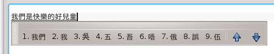
The spaces between the roman characters above are added only for legibility and should not be typed. CAP determines the most likely phrase for this romanization and displays that in the conversion buffer (the underlined characters). To accept this phrase, simply type a punctuation mark or hit space or enter. So imagine how fast one can type if CAP always suggests the correct sentence: type the romanization of a sentence (without spaces or other separators), punctuation mark, romanization, punctuation mark, and so on.
What if the sentence you intended to type with that romanization was
鵝滿是快烙滴好耳痛
instead? CAP shows you all words that can begin the current romanization in the conversion buffer in a candidate window, ordered by decreasing likelihood it determines for them given the context. The candidate window shows only one row of candidates at a time and can be scrolled up and down using the up and down keys or the page-up and page-down keys. Of course if you’ve used any kind of input method at all, you’re familiar with this.
Since the word 『鵝』 is not in the candidate window, we hit Down to look for it, and it appears as the third candidate on that row.
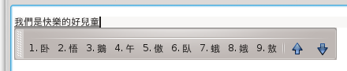
Hit “3” to select it.
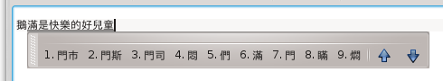
Then look for the word 『滿』 which is the sixth candidate in the candidate window. Hit “6” to select it.
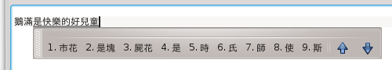
In the same way select 『是』 (fourth candidate).
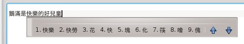
Select 『快』 (fourth candidate).
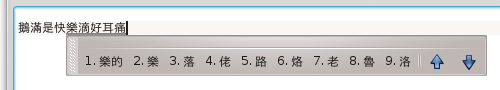
Select 『烙』 (sixth candidate).
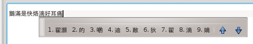
At this point, CAP correctly chooses 『滴好耳痛』 as the rest of the sentence using the SLM. Simply hit space or enter to select it or type a punctuation mark.
Notice that when you type sentences that are more unusual, CAP behaves much like a conventional word-based phonetic input method. An alternative way to type the second example above is to choose words in the candidate window as we type the romanization. After a while of using CAP, one would develop a good intuition of whether to start choosing words in the candidate window, or to wait for CAP to “settle” in to the correct phrase or sentence.
The SLM used by CAP was built from a corpus of modern written Chinese （白話文）, similar to the writing style of articles in the Chinese Wikipedia. The corpus also contains some of my own writings (that’s why it works very well for me!), and a small number of written Cantonese articles. So some sentences written in a more colloquial style will convert correctly but others perhaps not as well. This is not a limitation of the method, but is the result of selection of text I’ve made for the corpus when the SLM was built. At least for this release of CAP the SLM will be fixed and new phrases and sentences cannot be added.
By design, as soon as CAP is able to convert a prefix of the romanization entered, the converted Chinese characters will immediately appear in the conversion buffer, followed by a few unconverted roman characters. I think this is more natural and efficient because it lets the user concentrate more on the task of typing Chinese and not roman characters.
But what if one needs to correct typing mistakes and actually see the romanization? If I make a mistake only a few characters ago, I usually just hit backspace a few times and re-type. However, when a mistake is made at the beginning of a long romanization, I can hit the left-arrow key to move the cursor towards the beginning of the conversion buffer. Alt-left-arrow (command-left-arrow on a Mac) will move all the way to the beginning of the conversion buffer. Control-left-arrow (option-left-arrow on a Mac) will move one word at a time. The right-arrow, alt-right-arrow, and control-right-arrow keys will work in the opposite direction correspondingly.
For example if I’ve intended to type 廣東話輸入法, whose romanization is:
g w o n g d u n g w a s u e y a p f a a tbut omit the first ‘w’, and realize my mistake only after having entered the entire romanization:
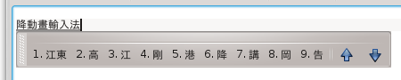
I can hit alt-left-arrow to go to the beginning of the conversion buffer:
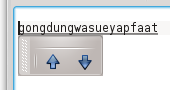
Then hit right-arrow and type ’w’ after the ‘g’:
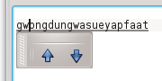
Then hit alt-right-arrow to go back to the end of the conversion buffer:
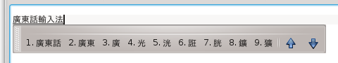
Instead of hitting alt-right-arrow, I can hit right-arrow or control-right-arrow a number of times to reach the end of the conversion buffer.
Therefore a quick way to switch from a converted Chinese characters display to a romanization display and back in the conversion buffer is to hit alt-left-arrow and alt-right-arrow, respectively.
As a general rule, characters to the left of the cursor in the conversion buffer are converted as far as possible. Characters to the right of it are always displayed as roman characters, which allows editing.
When the content of the conversion buffer matches what the user wants to type, he can hit space or enter, or type a punctuation mark to accept that conversion. A punctuation mark is converted into the corresponding Unicode CJK punctuation and then appended. The ‘,’, ‘.’, ‘!’, ‘?’, ‘;’, ‘[’, and ‘]’ keys on the ASCII keyboard are converted into the Unicode characters ‘，’, ‘。’, ‘！’, ‘？’, ‘、’, ‘『’, and ‘』’, respectively. Advanced users can edit the file Punctuations.plist (in directory /usr/share/ibus-cap on Linux) to change the set of characters that are considered punctuations, and the Unicode characters into which they are translated.
To me, Jyutping is weird. I’d rather type yuet and not jyut as the romanization of 『粵』, and ja and not zaa for 『炸』, seung and not soeng for 『上』, etc. Not to say that the Sidney Lau romanization takes no effort to learn. Any phonetic transcription system requires some time to learn and some getting used to.
One of the key hurdles for Cantonese romanization beginners is to distinguish the “a” and “aa” sounds. E.g., in Sidney Lau romanizaton, 『達』 is romanized as daat while 『突』 is dat (think long versus short sounds). Also 『腳踭』 is geuk jaang while 『高僧』 is go jang. Notice that 『打』 is romanized da (with a single ‘a’) although logically it should be daa. This is an exception in the Sidney Lau romanization because the short “a” sound never appears by itself.
Another difficulty is to distinguish the “u” and “oo” sounds. For example， 『繪』 is romanized as kooi while 『驅』 is kui (again long and short sounds). So strictly speaking 『虎』, 『配』, 『伴』, and 『活』 must be romanized as foo, pooi, boon, and woot, respectively, while 『送』, 『屬』, 『水』, 『信』, and 『術』 must be romanized as sung, suk, sui, sun, and sut, respectively. Fortunately, cases where “u” and “oo” must be typed exactly (as in the example of 『驅』 and 『繪』 above) are very rare. CAP makes this easier by allowing “oo” to be entered as “u” instead in cases where it doesn’t matter, which is almost all the time. So 『虎』, 『配』, 『伴』, and 『活』 can be typed as fu, pui, bun, and wut as well.
In Sidney Lau romanization, 『叉』 is romanized as cha. Since the letter ‘c’ isn’t used any other way in a romanization, CAP allows the initial “ch” to be abbreviated to “c” as a shorthand. Therefore 『叉』 can also be romanized as ca.
So take your time, study the examples on the Chinese version of Wikipedia page on Sidney Lau romanization, practice, enunciate and articulate your senteneces in your mind (or out loud if you’re alone :-)), and you’ll be typing Chinese in CAP quickly before you know it.
So how do you install and setup CAP on your Linux PC? First, download a .deb or .rpm package from my ibus-cap SkyDrive directory. Since you use Linux, you should already know the following: download a .deb package if your Linux distro is Debian, Ubuntu, etc.; download a .rpm package if your linux distro is RedHat, Fedora, OpenSuse, etc. For 32-bit distros, download the package with i386 in the filename. For 64-bit distros, download the package with amd64 or x86_64 in the filename. Ibus-cap works under both the GNOME and KDE desktop environments, provided that IBus has been installed.
Once downloaded, install the ibus-cap package as you would install any other packages on your Linux PC. Usually that simply amounts to double-clicking on the package file icon. Ibus-cap depends on the ibus and libcanberra packages. These will be installed automatically if they’re not already installed on your system.
The following is a snapshot of the panel displayed by the Apper software manager after I click on the file ibus-cap-1.0-2.x86_64.rpm in the Dolphin file manager on OpenSuse. When I click the Continue button in the panel, I’ll be asked to type in the administrator password so that the installation can proceed.
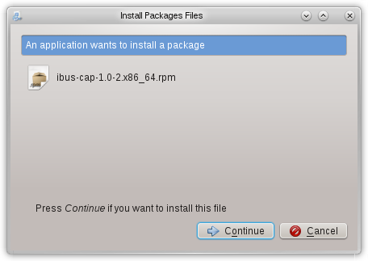
On some distros such as Ubuntu, once IBus is installed, you need to select IBus as the “input method engine”. Do this by clicking on System Settings (wrench and cogwheel icon), double-clicking Language Support and in the “Keyboard input method system:” popup menu, choosing ibus.
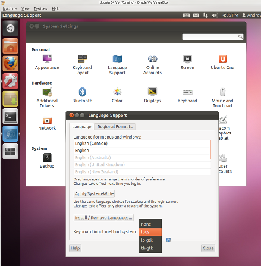
On some distros such as OpenSuse, simply installing IBus will make it available to a user when he logs in. For IBus to work correctly with other applications, make sure that the ibus-qt, ibus-gtk, ibus-gtk-32bit, and ibus-gtk3 packages are also installed. If they’re not, a simple way to get them all at once is to install one of the IBus input methods, e.g., ibus-table-chinese-cantonese.
Once you’re using IBus as the input method engine, ibus-cap needs to be added as one of the available input methods. Right click on the IBus icon in the system tray (looks like a mini keyboard) and choose the Preferences popup menu item.
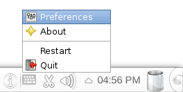
The IBus Preferences panel will appear. Click the Input Method tab. In the Select an input method popup menu, select Chinese -> Cantonese AI Phonetic IM, then click the Add button. The resulting panel should look like this:
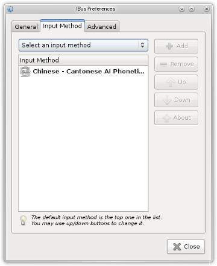
You may also wish to set other options in the General and Advanced tabs. E.g., I set Show language panel to embedded in menu. Note that currently Candidates orientation does not affect how ibus-cap displays candidates (it’s always horizontal).
Now you’re ready to use CAP! When a GUI element that supports text input (such as a text box) is in focus, you can hit the keyboard shortcut to enable the input method (this shortcut is customizable under the General tab). If you have added more than one input method in IBus Preferences, you can hit the keyboard shortcut to cycle through them (also customizable under the General tab). When CAP is active, the IBus icon (mini keyboard) will switch to the ibus-cap icon (the character 『粵』):
That sigifies that you’re using CAP as input method and can start typing Cantonese romanization, as shown in all the examples above.
Left clicking the ibus-cap icon will allow you to change a couple of options: the use of Sidney Lau or Jyutping romanization, and whether CAP should output traditional or simplified Chinese characters.
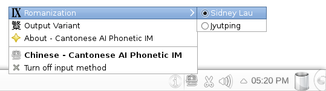
The choice of these options are persistent, in the sense that they’ll remain set next time you login and across reboots.
Note that when Show language panel is not set to embedded in menu in the IBus Preferences panel, this options menu may appear as a “torn-off toolbar” somewhere on the display.
Ibus-cap is an original, copyright program designed and written by me.
A Mac OS X Lion version of CAP will be made available soon and a Windows version is being implemented. These will most likely be “free-to-use” programs but will not be open-source (certainly never GPL!). Ibus-cap is distributed in binary form only.
The public is given the permission to use ibus-cap only for personal and non-commercial purposes.
Redistribution of ibus-cap or its parts in binary or any other form without permission, with or without modification, is prohibited.
I am not liable for any losses or damages caused by the use of this program.
For more information on the licence of CAP, see the file LICENSE (in directory /usr/share/doc/ibus-cap/ on Linux).
I don’t really have much interest or sufficient time and resources to provide “user support” for CAP. So please, use it only if you know enough about Linux to solve most problems on your own. Also please don’t be surprised if I don’t reply to your Email containing questions that I think can be answered by a little experimentation. Just remember this is not a free or open-source project.
Category: Programming